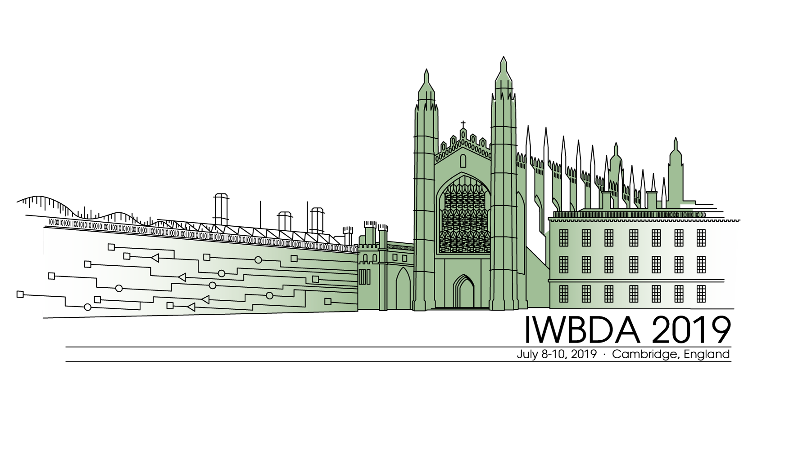

11th International Workshop on Bio-Design Automation
Vote on best poster and presentation here
Proceedings
IWBDA 2019 Booklet
Monday, July 8th
09:00 - 17:30 SBOL Workshop (Schedule)
13:30 - 17:30 Workshop on Bio-Design for Portability (BD4P) (Schedule)
Tuesday, July 9th
08:00 - 09:00 Breakfast and Registration
09:00 - 09:10 Welcome & Opening Remarks Pietro Lio' (University of Cambridge)
09:10 - 10:30 Session I: Design Automation, Chair: Bradley Brown (Newcastle University)
- DNAWeaver: optimal DNA assembly strategies via supply networks and shortest-path algorithms
Valentin Zulkower, The Edinburgh Genome Foundry Team, and Susan Rosser
- An automated QC pipeline for libraries with high degree of variants
Ernst Oberortner, Robert Evans, and Jan-Fang Cheng
- Automated Design and Characterization of Large Toolboxes of Highly Non-Repetitive Genetic Parts
Ayaan Hossain and Howard M. Salis
- The Operon Refactoring and Construction Assistant (ORCA): Streamlined gene cluster refactoring
Ernst Oberortner, Nathan J. Hillson, and Jan-Fang Cheng
10:30 - 11:00 Break
11:00 - 12:00 Keynote I: Luca Cardelli (University of Oxford)
- Title: Integrated Scientific Modeling and Lab Automation
- Abstract: The cycle of observation, hypothesis formulation, experimentation, and falsification that has driven scientific and technical progress is lately becoming automated in all its separate components. However, integration between these automated components is lacking. Theories are not placed in the same formal context as the(coded) protocols that are supposed to test them: neither description knows about the other, although they both try to describe the same process.
We develop integrated descriptions from which we can extract both the model of a phenomenon (for possibly automated mathematical analysis), and the step carried out to test it (for automated execution by lab equipment). This is essential if we want to carry out automated model synthesis, falsification, and inference, by taking into account uncertainties in both the model structure and in the equipment tolerances that may jointly affect the results of experiments.
12:00 - 13:30 Lunch
13:30 - 14:30 Session II: Machine Learning, Chair: Jacob Beal (Raytheon BBN Technologies)
- Towards a framework for implementing evolutionary algorithms in bacterial colonies
Javier Carrión, Yerko Ortiz, and Martín Gutiérrez
- Combining metabolic modelling with machine learning accurately predicts yeast growth rate
Christopher Culley, Supreeta Vijayakumar, Guido Zampieri, and Claudio Angione
- Towards Detection of Engineering in Metagenomic Sequencing Data for Yeast and Other Fungi
Sancar Adali, Aaron Adler, Joel S. Bader, John Grothendieck, Thomas Mitchell, Anton Persikov,
Jonathan Prokos, Richard Schwartz, Mona Singh, Allison Taggart, Benjamin Toll, Stavros Tsakalidis,
Daniel Wyschogrod, Fusun Yaman, Eric Young, and Nicholas Roehner
14:30 - 15:00 Break
15:00 - 15:40 Session III: Computation in Genetic Circuits, Chair: Prashant Vaidyanathan (Microsoft)
- Biophysical Analysis for Implementing Neuro-inspired Computing in Living Cells
Ramez Danial, Luna Rizik, Ximing Li, and Raghd Abu Sinni
- Analyzing Genetic Circuits for Hazards and Glitches
Pedro Fontanarrosa, Hamid Hosseini, Amin Espah Borujeni, Yuval Dorfan, Chris Voigt, and Chris Myers
15:40 - 16:10 Poster Pitches I (1min per poster), Chair: Prashant Vaidyanathan (Microsoft)
- A Logic Programming Language for Computational Nucleic Acid Devices
Carlo Spaccassassi, Matthew R. Lakin, and Andrew Phillips
- CellScanner: a software for extracting physical features from individual cells
Sebastián Antón, Marco Clavero, and Martín Gutiérrez
- OptBioDes: optimal design for the synbio toolchain
Pablo Carbonell, Rainer Breitling, Jean-Loup Faulon, and The SYNBIOCHEM Team
- Integration of Performance Metrics into Microfluidic Design Automatiom
Radhakrishna Sanka and Douglas Densmore
- Modular Microfluidic Design Automation Using Machine Learning
Ali Lashkaripour, Christopher Rodriguez, Noushin Mehdipour, David McIntyre, and Douglas Densmore
- Accelerating the Threshold and Timing Analysis of Genetic Logic Circuit Models
Sanaullah, Hasan Baig, and Jeong A Lee
- Better research by efficient sharing: evaluation of free management platforms for synthetic biology designs
Uriel Urquiza-García, Tomasz Zieli'nski, and Andrew J. Millar
- A method for compiling arbitrary transfer functions to molecular circuits
Iuliia Zarubiieva, Francesca Mantellino, Andrew Phillips, and Vishwesh Kulkarni
- The Morphogen Circuit Builder & Compiler
Bryan Bartley, Brian Basnight, Jesse Tordoff, Jacob Beal, Ron Weiss
- Machine Learning Algorithms for Robust Meta-Analysis of Gene Expressions
Vishwesh Kulkarni, Xinwu Yu, and Weikang Qian
- Mutation of synthetic constructs in E. coli
Duncan Ingram, Mark Isalan, and Guy-Bart Stan
- Parallel Binary Sorting and Shifting with DNA
Tonglin Chen and Marc Riedel
16:10 - 17:30 Poster Session
Wednesday, July 10th
09:00 - 09:10 Welcome & Opening Remarks Prashant Vaidyanathan (Microsoft)
09:10 - 10:30 Session IV: Modelling, Chair: Nicholas Roehner (Raytheon BBN Technologies)
- An automated model reduction tool to guide the design and analysis of synthetic biological circuits
Ayush Pandey and Richard M. Murray
- Estimating Biologically Relevant Network Structures from Time-series Data
Zoltan A. Tuza and Guy-Bart Stan
- Model-driven design of genetic regulatory networks using virtual parts
Göksel Misirli, Bill Yang, and Anil Wipat
- Stochastic Analysis of an Genetic Sensor
Jeanet Mante, Pedro Fontanarrosa, and Chris Myers
10:30 - 11:00 Break
11:00 - 12:00 Keynote II: Traci Haddock-Angelli (iGEM Foundation)
- Title: Setting Standards in Synthetic Biology
- Abstract: Since 2003, the iGEM Foundation has been working on setting standards in synthetic biology.
From the early days of BioBricks, we have worked to introduce the idea of engineering standards to young synthetic biologists through the competition and to the rest of the synthetic biology community through the Registry of Standard Biological Parts. Recent work has focused on introducing a new assembly standard to the Registry and on the development of standard protocols to promote the use of absolute units for fluorescence measurements. Through the development of these standards, we know that community involvement is crucial to the creation and adoption of new standards, and invite you all to join us as we work towards creating a strong, responsible, and visionary synthetic biology industry.
12:00 - 13:30 Lunch
13:30 - 14:30 Session V: Data standards and Visualization, Chair: Ernst Oberortner (Berkeley Lab)
- Visualization of Part Use in SynBioHub
Jeanet Mante, Zach Zundel, and Chris Myers
- SBOL Visual 2 Ontology
Göksel Misirli, Jacob Beal, Thomas E. Gorochowski, Guy-Bart Stan, Anil Wipat, and Chris Myers
- Flapjack: an open-source tool for storing, visualising, analysing and modelling kinetic gene expression data
Guillermo Yáñez, Isaac Núñnez, Tamara Matute, Fernán Federici, and Timothy J. Rudge
14:30 - 15:00 Break
15:00 - 16:00 Session VI: Microfluidics, Chair: Radhakrishna Sanka (Boston University)
- A Reconfigurable Digital Microfluidics Platform
Georgi Tanev, Luca Pezzarossa, Winnie E. Svendsen, and Jan Madsen
- Design Automation of Microfluidic Droplet Sorting Platforms
David McIntyre and Douglas Densmore
- Detecting Engineering in Single Cells using Tapestri Microfluidics
Aaron Adler, Adam Abate, Joe Collins, Ben Demaree, Kevin Keating, Xiangpeng Li, Thomas Mitchell, David Ruff, Allison Taggart, Shu Wang, Daniel Weisgerber, Daniel Wyschogrod, Fusun Yaman, Eric M. Young, and Nicholas Roehner
16:00 - 16:30 Break
16:30 - 17:10 Discussion/Special Session: Jacob Beal
Topic: “Keeping the Promises of Synthetic Biology.”
17:10 - 17:30 Wrap up, Announcements, & Award Ceremony